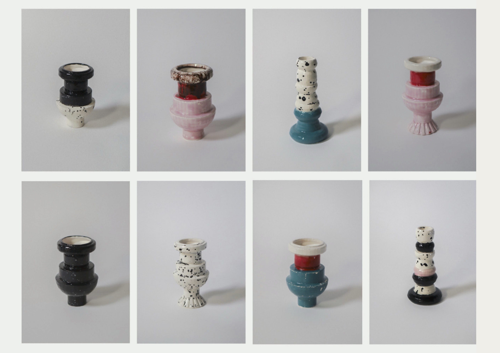
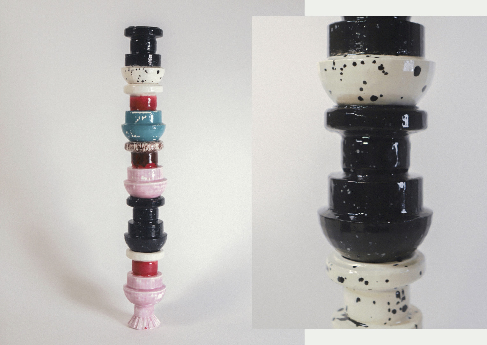

Material experiments
Textile design · Product design
A graphic research project inspired by an unexpected sense of vitality discovered at Gare de Bercy in Paris, a station often perceived as worn and austere.
The contrast between the grey concrete architecture and the constant movement of people revealed an underlying rhythm and visual energy within the space.
Using long-exposure photography to capture this movement, the project translates these traces of activity into a tile-based surface system.
The proposal explores how printed tiles could reactivate the station by introducing rhythm, colour, and a renewed spatial identity.
An object study exploring the transformation from flat geometry to volumetric form.
The initial shapes were extracted and reconstructed in Blender using extrusion and rotational modelling processes.
The digital model was then materialised through 3D printing and reproduced in ceramic using a plaster casting process.
The project investigates how machine-generated forms can be translated into handcrafted material outcomes.



